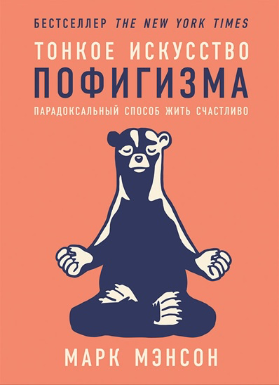

Время от времени читаю всякие non-fiction книжки. В отпуске наткнулся на книжку Марка Мэнсона "Тонкое искуccтво пофигизма". Рекомендую к прочтению, книга классная и короткая — почти всю получилось прочитать за день перелетов.
Книжка зацепила своим фокусом на ценностях. "Пофигизм" Мэнсона в том, что перестать переживать из-за неважного, сфокусироваться на самом ценном. Марк Мэнсон дает подсказку, как определить здоровые ценности (дружба, творчество, честность и т.д.), и как отделить их от нездоровых. Если чувствуешь, что слишком много переживаешь по жизни (как я) — стоит почитать ;)
Несколько мыслей, которые осели после прочтения в черепушке:
Больше цитат в этом посте.
Проперся от манеры письма. Недавно читал книжку "Эссенциализм" — вроде бы книжка похожа по замыслу (сфокусироваться на важном, отбросить все лишнее), но манера письма решает! Никакого bullshit про то, что нужно верить в одну идею, посмотрите на эти 100500 историй успеха как у чуваков все получалось. Вместо этого — байки про фейлы, истории про неудачников-музыкантов и супергерой Панда Разочарования, чья суперспособность — говорить тебе правду, от которой хочется плакать.
Из минусов книжки — отсутствие техник или инструментов, которые потом останутся после прочтения книги. Ну и непонятная для меня структура глав — книжка больше походит на эссе, системного подхода от нее ждать не стоит.
"Тонкое искусство пофигизма" для меня — отличная книжка-батарейка. Не подчерпнул для себя новых знаний или техник, но книга подталкивает к тому, чтобы подумать о своих ценностях, что ты делаешь и почему — и зарядиться жить дальше.